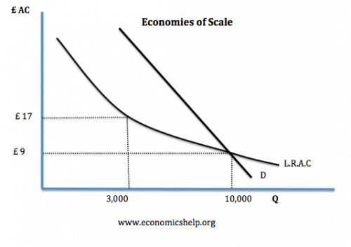

Advantages of Nationalisation – 25‑Mark Essay (3 Paragraphs + Intro + Conclusion)
 
Nationalisation—the transfer of privately owned industries into state ownership—has long been debated as a tool for improving economic efficiency, equity, and long‑term strategic planning. It is most commonly applied to sectors such as rail, energy, and water, where market failures are significant and private incentives may not align with social welfare. While nationalisation can deliver substantial benefits, its effectiveness depends on how well the state manages incentives, investment, and accountability.

One major advantage of nationalisation is its ability to correct market failures, particularly in natural monopolies such as water supply, rail infrastructure, and energy distribution. These industries exhibit high fixed costs and strong economies of scale, meaning that competition is inefficient and often impossible. Under private ownership, firms may exploit monopoly power by raising prices or under‑investing in maintenance to maximise profits. Nationalisation allows the government to operate these industries with welfare‑based objectives, potentially lowering prices and improving service quality. For example, the fragmented UK rail system has faced persistent delays and high fares, suggesting that a unified public operator could coordinate timetables, maintenance, and investment more effectively. However, evaluation shows that public monopolies may suffer from weak incentives to innovate or control costs, meaning efficiency gains are not guaranteed without strong governance and performance monitoring.



A second advantage is the promotion of equity and universal access to essential services. Private firms often prioritise profitable regions and customer segments, leaving rural or low‑income areas underserved. Nationalisation enables cross‑subsidisation, where profitable routes or regions support less profitable ones, ensuring universal provision. For instance, a publicly owned energy provider could maintain supply in remote areas and offer lower tariffs to vulnerable households, reducing fuel poverty and supporting social inclusion. This aligns with broader social objectives such as reducing inequality and improving living standards. Yet, from an evaluative perspective, universal provision can impose significant fiscal costs on the state. Taxpayers ultimately fund these services, and if public finances are strained, governments may struggle to maintain quality without raising taxes or cutting spending elsewhere.

Nationalisation also supports long‑term strategic planning that private firms may avoid due to shareholder pressure for short‑term profits. Public ownership allows governments to invest in infrastructure, environmental sustainability, and national security without prioritising quarterly returns. For example, a nationalised energy grid could accelerate investment in renewable technologies, helping the UK meet climate targets and reduce reliance on foreign suppliers. This strengthens economic resilience and aligns investment with national priorities. However, evaluation highlights that political cycles can undermine long‑term planning; governments may prioritise visible, vote‑winning projects rather than economically optimal ones. Additionally, state‑led investment can become inefficient if decision‑making is slowed by bureaucracy or influenced by political interests rather than economic logic.

Overall, nationalisation offers clear advantages in sectors where market failures are severe, universal access is essential, and long‑term strategic investment is required. It can improve coordination, enhance equity, and align economic activity with national priorities. However, these benefits are not automatic. The success of nationalisation depends on effective governance, insulation from political interference, and strong accountability mechanisms. When well‑designed, nationalisation can deliver substantial social and economic gains, but without disciplined management it risks inefficiency and fiscal strain.
